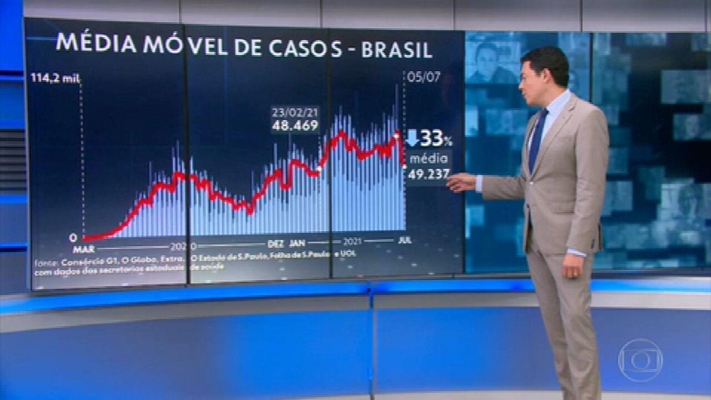
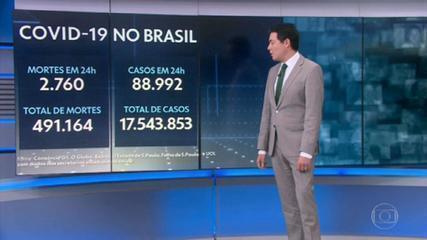
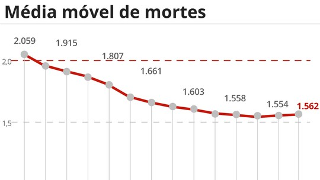
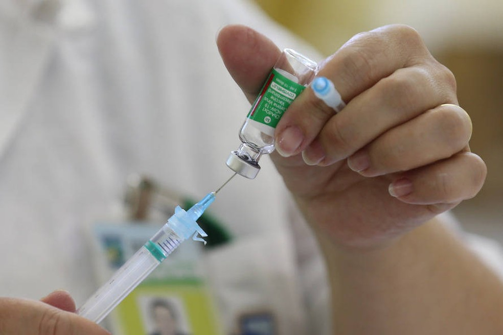
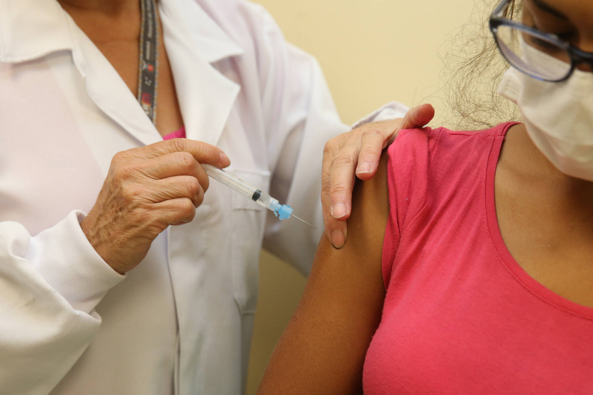
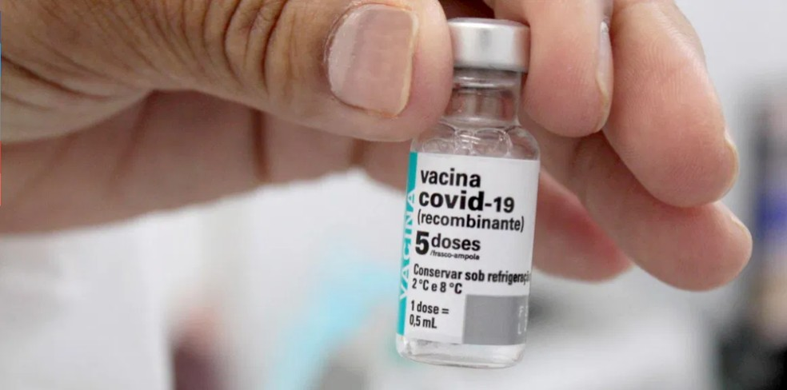
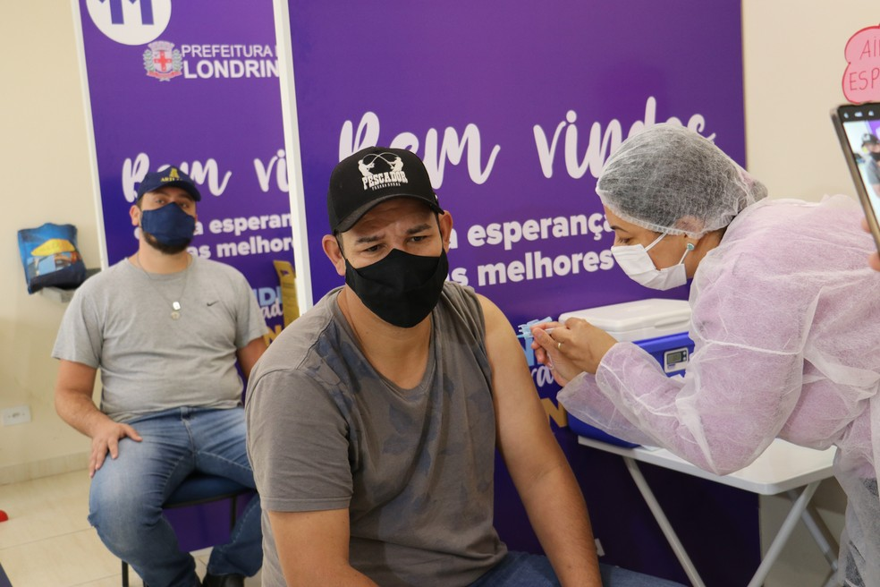

Ultimas notícias sobre o coronavírus no Brasil
País contabiliza 525.229 óbitos e 18.792.076 casos, segundo balanço do consórcio de veículos de imprensa com dados das secretarias de Saúde. Média móvel de 49.237 novos casos por dia aponta queda de 33% em relação a 14 dias.
O Brasil registrou 754 mortes por Covid-19 nas últimas 24 horas, totalizando nesta segunda-feira (5) 525.229 óbitos desde o início da pandemia. Com isso, a média móvel de mortes nos últimos 7 dias chegou a 1.575. Em comparação à média de 14 dias atrás, a variação foi de -20% e aponta tendência de queda.
Em ritmo de diminuição ainda mais positivo, a média móvel de casos da doença atingiu seu maior indicativo de queda (-33%) em relação a 14 dias, considerando os dados desde o início da pandemia.
Média de mortalidade
Apenas o Acre apresenta tendência de alta nas mortes. Temos nove estados em estabilidade; DF e outros 16 apontam queda no comparativo com 14 dias atrás.
Em casos confirmados, desde o começo da pandemia, 18.792.076 brasileiros já tiveram ou têm o novo coronavírus, com 25.796 desses confirmados no último dia. A média móvel nos últimos 7 dias foi de 49.237 novos diagnósticos por dia - a mais baixa desde 23 de fevereiro (quando estava em 48.469). Isso representa uma variação de -33% em relação aos casos registrados na média há duas semanas, o que indica tendência de queda também nos diagnósticos.
Esses -33% representam a maior queda registrada na média de casos desde o início da pandemia. Antes, por duas vezes o comparativo chegou a indicar -32%: em 13 de setembro de 2020 (quando a média estava em 27.507) e neste último domingo (quando ficou em 49.881).
Estados
- Em alta (apenas 1 estado): AC
- Em estabilidade (8 estados): RO, AL, ES, AP, SC, MS, SP, MT
- Em queda (17 estados e o DF): PR, RS, BA, RR, MG, GO, AM, PA, TO, PE, RN, MA, RJ, DF, PB, SE, CE, PI
Vacinação
Balanço da vacinação contra Covid-19 aponta que 77.487.380 pessoas já receberam a primeira dose de vacina contra a Covid-19, segundo dados divulgados até as 20h. O número representa 36,59% da população brasileira.
Totalmente imunizados correspondem a 12,92% dos brasileiros -- há oito dias o Brasil está na faixa dos 12% de pessoas que receberam as duas doses ou dose única de vacinas. São 26.470.130 que se vacinaram com duas doses e 895.278 que tomaram a dose única, o que dá um total de 27.365.408 doses aplicadas.
No total, 104.852.788 doses foram aplicadas em todo o país.
Vacinas em Londrina
A Prefeitura de Londrina, no norte do Paraná, ampliou nesta segunda-feira (5) a vacinação contra a Covid-19 para pessoas com 43 e 44 anos.
Em Londrina, são oferecidas cinco salas exclusivas para vacinação contra a Covid-19, que ficam localizadas nas regiões norte, oeste, leste e sul.
Conforme a prefeitura, estão disponíveis o Centro de Imunização no CCI Norte, mais as Unidades Básicas de Saúde (UBSs) do Jardim do Sol, Alvorada, Eldorado e Ouro Branco.
No dia e horário marcados, é preciso ter em mãos um documento oficial com foto, o comprovante de agendamento com QR Code, mais comprovante de residência emitido recentemente.